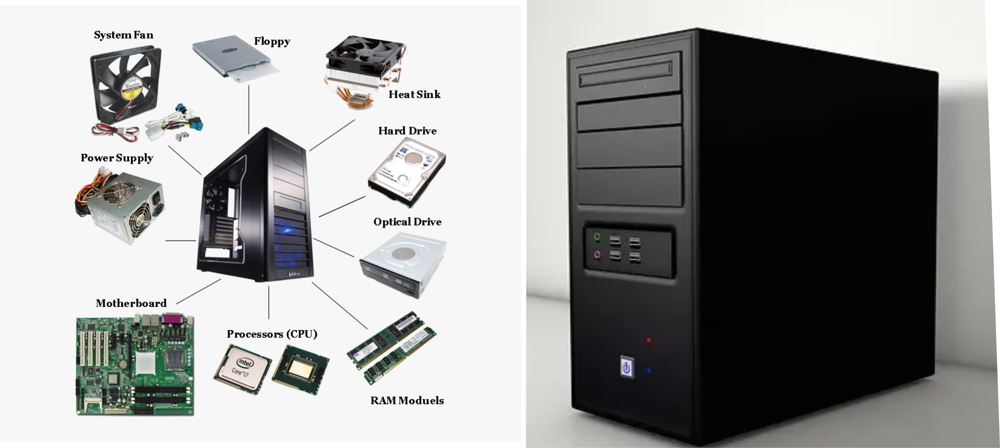
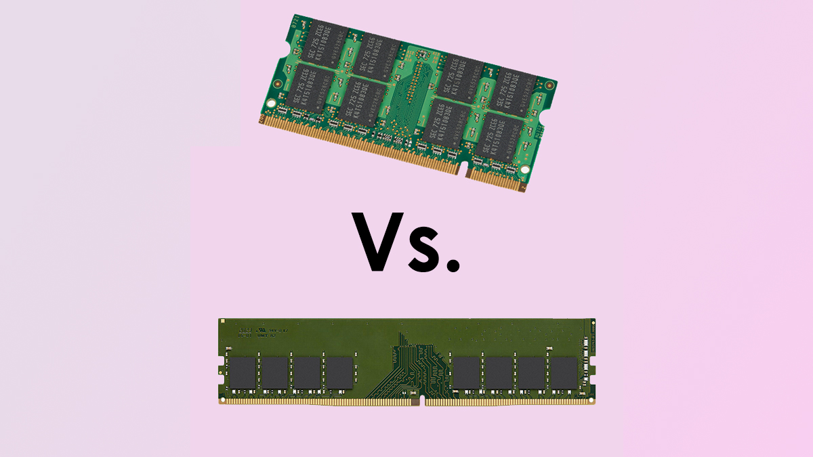
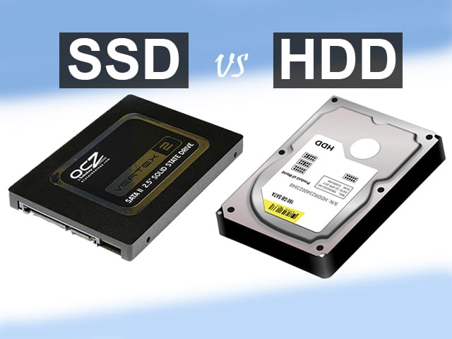
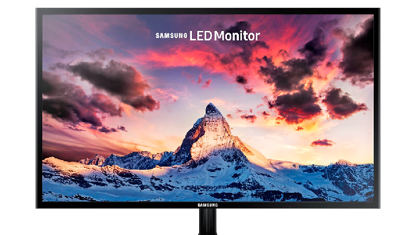

Hardware
Perangkat keras (hardware) adalah bagian fisik dari komputer.
Hardware adalah komponen fisik dari komputer yang bisa dilihat dan disentuh. Hardware ini berfungsi untuk menjalankan berbagai tugas dalam pengolahan data.
Contoh hardware utama komputer:
CPU (Central Processing Unit)

Otak dari komputer yang melakukan semua perhitungan dan pengolahan data.
RAM (Random Access Memory)
Memori sementara yang digunakan untuk menyimpan data dan program yang sedang aktif digunakan.
Contoh RAM (Random Access Memory)
RAM (Random Access Memory)

Hard Drive (HDD) / SSD (Solid State Drive)
Media penyimpanan permanen untuk data dan program.
Dalam sebuah perangkat komputer baik yang berupa PC Dekstop maupun Laptop, media penyimpanan merupakan salah satu komponen mutlak. Jika tidak terdapat media penyimpanan, maka prangkat komputer tersebut tidak akan dapat digunakan. Selama ini, harddisk atau yang disingkat HDD merupakan media penyimpanan paling populer pada komputer. Hal ini disebabkan karena harddisk memiliki kapasitas penyimpanan yang lebih besar dibanding media penyimpanan lainnya. Namun, seiring dengan perkembangan teknologi yang sangat pesat, maka media penyimpanan pun mengkuti perkembangan tersebut. Saat ini, HDD sudah tidak lagi menjadi primadona semenjak hadirnya generasi baru yang disebut Solid State Drive atau SSD. Teknologi SSD merupakan hasil pengembangan teknologi HDD yang bertujuan untuk memenuhi dan mengimbangi perkembangan teknologi komponen lain pada komputer.
Contoh: Hard Drive (HDD) / SSD (Solid State Drive)

Motherboard
papan sirkuit utama pada komputer yang menghubungkan dan memungkinkan semua komponen perangkat keras (hardware) untuk berkomunikasi dan beroperasi bersama
motherboard adalah "otak" dari komputer karena menjadi fondasi yang mengkoordinasikan berbagai komponen seperti CPU, RAM, kartu grafis, dan perangkat penyimpanan
Contoh Motherboard

Power Supply Unit (PSU)
komponen elektronik yang berfungsi sebagai penyedia daya listrik untuk perangkat elektronik, termasuk komputer dan perangkat lainnya
Secara umum, power supply mengubah energi listrik dari sumber utama (seperti listrik PLN) menjadi energi listrik yang sesuai dengan kebutuhan perangkat elektronik
Contoh Power Supply Unit (PSU)

Monitor
Fungsi utama monitor komputer adalah menampilkan informasi yang diproses oleh komputer dalam bentuk visual, seperti teks, gambar, video, dan grafik
Monitor memungkinkan pengguna untuk berinteraksi dengan komputer, menjalankan program, dan melihat hasil dari berbagai aktivitas komputasi.
Contoh Layar Monitor
